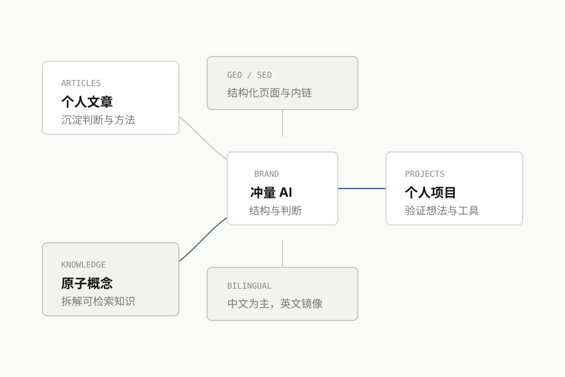

精选项目占位
项目名、仓库链接、解决的问题、你的贡献与项目状态会放在这里。

WRITING
后续导入你的 Markdown 后，这里会展示本地文章、公众号文章和人人都是产品经理等外部发布内容。
CONCEPTS
每个概念独立成页，回答定义、价值、边界、相关概念和相关阅读，方便读者直接查询。
PROJECTS
这里先保留 GitHub 精选项目占位，等你给出仓库列表后再补充项目说明、技术栈和源码链接。
项目名、仓库链接、解决的问题、你的贡献与项目状态会放在这里。
适合放 AI 工具、知识库处理、Agent 实验或工程化沉淀。